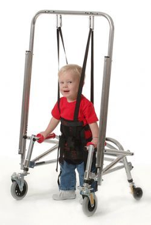
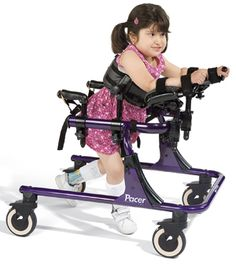

Toy for Gross-motor play
Abstract
Landon Cole is a two year old child with Cerebral Palsy born extremely early to a family in the Centennial area. Landon currently has little mobility due to his inability to walk, but is currently in physical therapy and uses a gait trainer at home in order to improve. His family has expressed that his current gait trainer is inadequate for Landon's condition in mobility, mass, and engagement. Our goal is to create a new device for him to use that is more appropriate in structure and engaging in nature.
Team members
The Squad
1. Reagan Skelton (Senior)
2. Jed Bennett (Junior)
3. Tristan Watson (Junior)
4. Erick Jackson (Senior)
5. Eduardo Minetto (Junior)
Special Mentions
Taylor Ann Coulter, DPT, Reagan's cousin. Doctor Coulter analyzed the video of Landon operating the family's current therapeutic device and provided critique of its current design while providing insight into Landon's disability (Cerebral Palsy) to keep in mind while designing our new device.
Problem Statement/overview of the need
Landon is a 2'11", 30 pound, two-year old with Cerebral Palsy. He is more mentally capable than he is physically. The Cole family gave us several issues they struggle with on a daily basis to consider in our new design. Landon's attention span is extremely narrow, so he gets bored in his mobility walker quickly. His mobility walker also weighs more than him, and the wheels are not suited for carpeted area. Landon loves his stander's tray but hates being confined in all the restraints. To keep him walking correctly, his mobility walker has ankle restraints to prevent "scissor walking", but often leave him bruised.
Design Specifications
1. Light Weight
2. Surface Mobility
3. Comfort
4. Engagement
5. Price
6. Size
The original device was roughly 40 lbs. With Landon being 2 years old and only 30 lbs, this mass is excessive. Thus, the new design will have to be roughly half. Handles should rest around 18 inches off the ground to be easy to use for him. For ease of use and engagement, a seat of some sort is required. This should probably be sturdy enough to hold a child much larger than 40 lbs as Landon is already 40 lbs at the age of 2.
Background research
One of the designs we've considered using is to build off of an adjustable aluminum frame, as seen in [Figure 1]. This design will include adjustable, horizontally-sliding straps at the lower bars to keep Landon from scissor-walking by preventing him from overlapping his legs as well adjustable, modular trays to provide easily provide entertainment and space for him to eat and play.
Both Designs 1 & 3 will also incorporate a trunk support harness instead of a seat for additional comfort as seen in [Figure 2]. This will simultaneously keep him upright and comfortable, hopefully encouraging him to stay in the device.
Conceptual Design
Summarize your conceptual design process. Develop at least three concepts.
Design Concept 1
- Backwards facing walker with suspended support harness and optional tray attachment for engagement.
Design Concept 2
Modification to existing walker
- Wheel replacement
- New supervisor steering mechanism
- Removing arm supports
- adding tray attachment
Design Concept 3
Ground-up base framed walker with adjustable height for torso halo with capability of housing an adjustable tray for either toys or eating. The structure is fitted with guide rails to prevent scissor walking (crossing of legs during forward movement). The dimensions are roughly 36in by 28in and 26in to the top of the height adjuster. Pros - complete freedom of build, lightweight if made from hollow aluminum Cons - Not cost effective and time consuming.
Evaluate concepts/select candidate
Detailed Design
This section will describe a detailed design process
Description of selected design
Our final design is built upon our proposal for Design 1. The light-weight and open design of this proposal made it standout and easy to modify. A upper apparatus will be attached to this backwards-facing walker in order to better mount the harness system.
Detailed description of selected design
The selected design uses a standard mobility walker as its main structure. The idea of Landon being strapped in facing the open end of this walker allows him to have a much wider space to play and interact with his environment, addressing one of the key problems outlined by his parents: lack of drive to remain in his gait trainer. There will be straps along the bottom in order keep his legs separated and prevent scissor walking. Using braces, an upper aluminum frame (as shown in the figures below) will be attached. This will have a cross bar running horizontally that the tension lock slider straps from the harness will be attached to in order to support Landon. A removable tray with a deep design will also be attached to a pivoting bar in front of Landon so that he can eat while walking in this design. This tray's depth will also allow different toys to be played with on it or even different inserts to be used in order to broaden the use of the tray (such as one optimized for different toys or his electronic devices).
Analysis
Engineering analysis 1
The first analysis depicted the stress and strain in the crossbar caused by the force of supporting Landon. This was chosen to make sure the material would be acceptable.
Engineering analysis 2
This analysis ran a factor of safety test for the structure of the walker. This analysis was used in order to make sure the walker's structure is safe.
Engineering analysis 3
This analysis depicts the displacement the bars will experience as a result of the force that supporting Landon would apply. This was done to ensure that too much deformity wasn't caused to the structure while Landon is in it.
CAD Drawings
Bill of Materials
qty, item, description, source, part number, price
Assembly Instructions
Fabrication Process
Insert pictures of fabrication process
Testing and implementation
Describe testing, delivery, how used/received by the family
Photos of Completed design
Insert pictures of the final product
Instructions for safe use
Provide a clear summary of safe use for the family. Do not use the device unless supervised by an adult that has been fully understood the safe use of this product.